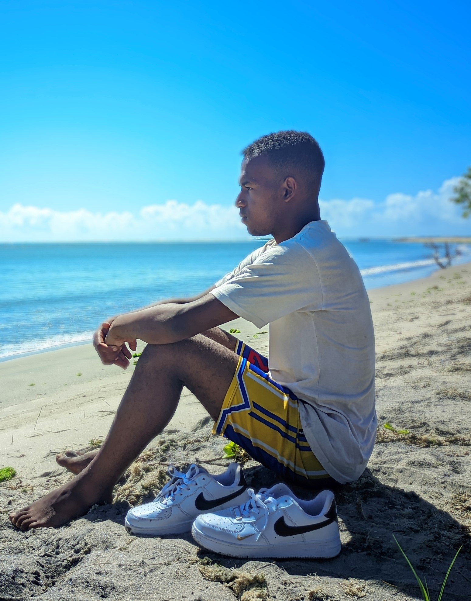

Je suis un développeur web passionné avec 1 an d'expérience dans la création de sites web modernes et réactifs. Mon objectif est de combiner beauté esthétique et fonctionnalité robuste dans chaque projet que j'entreprends.
Diplômé en informatique de l'Université ISM Advances, j'ai travaillé avec plusieurs startups et entreprises pour développer leurs plateformes en ligne.